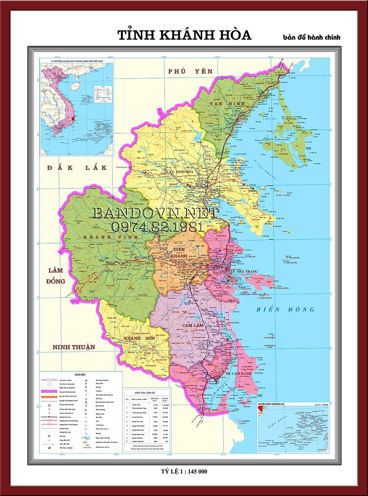
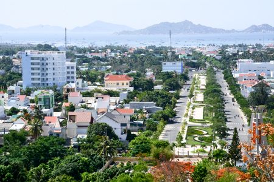
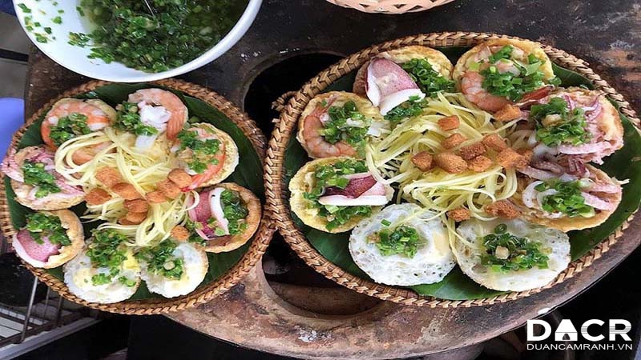
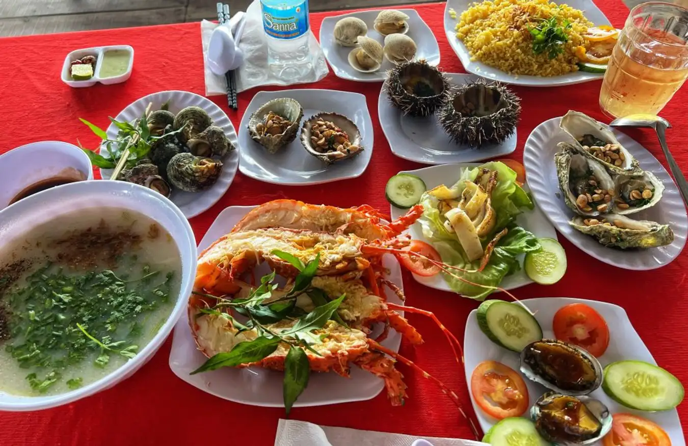
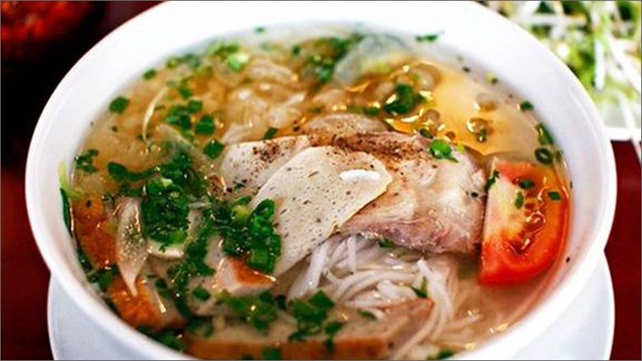

Cam Ranh là một địa điểm du lịch nằm ở miền Trung Việt Nam, cách thành phố Nha Trang khoảng 30km về phía nam. Vị trí địa lý đặc biệt của Cam Ranh là một trong những yếu tố quan trọng làm nên vẻ đẹp tự nhiên và tiềm năng du lịch của nơi này.
Nằm giữa hai thành phố lớn là Nha Trang và Cam Ranh, Cam Ranh được bao bọc bởi dãy núi ở phía bắc và vịnh Cam Ranh ấn tượng ở phía nam. Đây là một vị trí chiến lược về quân sự và giao thông, với sân bay quốc tế Cam Ranh phục vụ cho cả lưu thông nội địa và quốc tế.
Cam Ranh thuộc vào loại khí hậu nhiệt đới, với hai mùa rõ rệt: mùa khô và mùa mưa. Mùa khô kéo dài từ tháng 1 đến tháng 4, khi mà trời nắng nhiều và ít mưa. Trong khi đó, mùa mưa diễn ra từ tháng 5 đến tháng 10, với lượng mưa khá cao. Thời tiết ấm áp quanh năm là điều thu hút nhiều du khách đến với Cam Ranh, đặc biệt là những người muốn tránh xa khí hậu khắc nghiệt của miền Bắc vào mùa đông.
Với vị trí địa lý thuận lợi và khí hậu ôn hòa, Cam Ranh không chỉ là một điểm đến lý tưởng để tận hưởng biển xanh, cát trắng mịn mà còn là nơi lý tưởng để thư giãn và tận hưởng không khí trong lành của miền Trung Việt Nam.
Lịch sử của thành phố Cam Ranh chứa đựng những câu chuyện hấp dẫn về sự phát triển của vùng đất này qua các thời kỳ lịch sử khác nhau. Ban đầu, Cam Ranh là một vùng đất thuộc vùng định cư của người Chăm, một trong những cộng đồng dân cư đầu tiên ở miền Trung Việt Nam. Những dấu tích của văn hóa Chăm vẫn còn tồn tại qua các di tích kiến trúc và tượng thần trên lãnh thổ này, như Tháp Po Nagar. Trong thời kỳ đế quốc Pháp, Cam Ranh trở thành một trong những căn cứ quân sự chiến lược của họ ở Đông Dương. Sự cần thiết về vị trí chiến lược của Cam Ranh đã khiến cho Pháp phát triển cơ sở hạ tầng và cảng biển ở đây, đặc biệt là sau khi họ xây dựng nhà ga hành khách Cam Ranh để phục vụ cho các hành khách qua lại trên tuyến đường hàng không Indochina. Sau Chiến tranh Thế giới II, Cam Ranh trở thành căn cứ quân sự của Không quân Mỹ và sau này của Không quân Việt Nam Cộng hòa. Tuy nhiên, sau Cuộc chiến tranh Việt Nam, Cam Ranh được chính phủ Việt Nam chọn làm một trong những địa điểm phát triển du lịch và kinh tế quan trọng, đặc biệt là khi sân bay quốc tế Cam Ranh được nâng cấp và mở rộng để phục vụ cho việc du lịch và giao thương quốc tế. Hiện nay, Cam Ranh đã trở thành một trong những điểm đến du lịch hàng đầu ở miền Trung Việt Nam, với sự phát triển vượt bậc trong ngành du lịch và các ngành công nghiệp liên quan. Lịch sử đa dạng và phong phú của thành phố này là một phần quan trọng của danh thắng và nét đặc trưng của Cam Ranh ngày nay.
Ẩm thực Cam Ranh, một thành phố ven biển nằm ở tỉnh Khánh Hòa, Việt Nam, đa dạng và phong phú với các món ăn đậm chất biển và sự kết hợp tinh tế giữa nguyên liệu địa phương và ảnh hưởng của văn hóa ẩm thực các dân tộc. Dưới đây là một số đặc điểm chính về ẩm thực Cam Ranh: Hải sản tươi ngon: Bởi vị trí ven biển, Cam Ranh là nơi có nguồn hải sản phong phú. Cá, tôm, sò điệp, ốc, và nhiều loại hải sản khác được chế biến thành các món ngon độc đáo.   Bún cá: Một món ăn truyền thống của vùng miền ven biển, bún cá Cam Ranh có hương vị đặc trưng từ nước lèo được nấu từ xương cá và các loại gia vị tự nhiên, kèm theo miếng cá tươi ngon và rau sống.  Nem nướng Cam Ranh: Một món nem nướng thơm ngon, được làm từ thịt heo hoặc thịt bò, cuốn trong lá lốt và nướng trên than hoa. Nem nướng thường được ăn kèm với bánh hỏi, rau sống và nước mắm chua ngọt. Mì Quảng: Mặc dù mì Quảng có nguồn gốc từ Quảng Nam, nhưng nó cũng được ưa chuộng và phổ biến ở Cam Ranh. Mì Quảng ở đây thường được làm từ tôm, cá, thịt gà hoặc heo, kèm theo rau sống, bánh tráng và nước dùng đặc biệt. Gỏi cá trích: Một món ăn mát dịu, gỏi cá trích là sự kết hợp tinh tế giữa cá trích tươi ngon, rau sống, dấm, đường, và các loại gia vị. Những món ăn này chỉ là một phần nhỏ trong bảng thực đơn đa dạng và hấp dẫn của ẩm thực Cam Ranh. Điều này chứng tỏ sự phong phú và độc đáo của văn hóa ẩm thực địa phương.